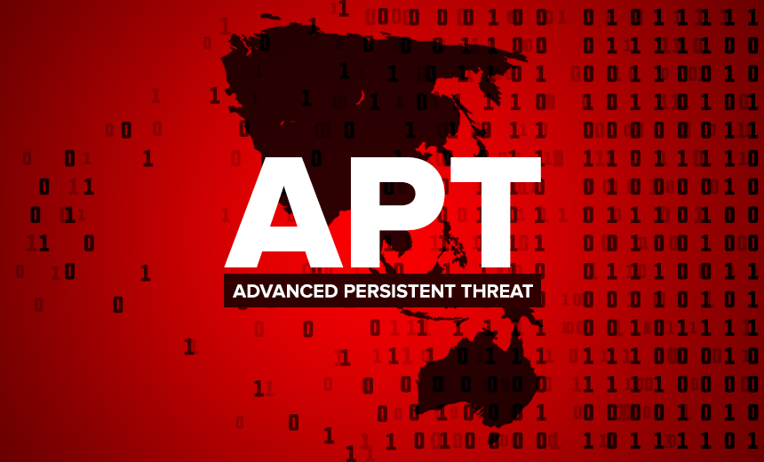

APT

Introduction
Je remarque que mes cours me prennent un temps monstrueux sur mon blog. La rentrée remonte à deux semaines, et je n’ai toujours pas publié de nouvel article… alors que les idées ne manquent pas.
Mais là, en bossant sur un exercice autour des APT, je me suis dit que j’allais joindre l’utile à l’agréable. Il est 7h du matin, un samedi, café en main, parfait pour faire un petit pont entre ce que j’apprends en cours et ce que je partage ici.
On entend souvent parler d’APT dans le cadre de cyberattaques. Et vu la manière dont c’est présenté, j’ai longtemps pensé que c’était juste des noms de groupes. En réalité, c’est un peu plus technique que ça. Alors dans cet article, je vais décortiquer un peu ce que ça veut dire, comparer avec une cyberattaque “classique”, et présenter un exemple concret d’APT (c'est une partie du devoir que je dois rendre 🤓).
C'est quoi une APT ?
APT, ça veut dire Advanced Persistent Threat (menace persistante avancée en français). On utilise ce terme pour désigner un type d’attaque qui est ciblée, discrète et qui s’inscrit dans la durée. Le but, ce n’est pas de faire du bruit ou de tout casser, mais plutôt de s’introduire dans un système, d’y rester, et de récolter des infos stratégiques.
Si on doit donner quelques caractéristiques d’une APT, les sources s'accordent pour :
- Un ciblage précis : on vise une organisation ou un secteur spécifique, pas des gens au hasard.
- Une persistance : l’attaquant reste longtemps dans le système, en essayant de ne pas se faire repérer.
- Des moyens techniques : outils sur mesure, techniques d’évasion, utilisation d’outils légitimes pour passer inaperçu.
- Un objectif stratégique : souvent l’espionnage, le vol de données sensibles, parfois même du sabotage.
Attention, une APT, ce n’est pas juste un "virus compliqué". C’est surtout une campagne organisée, menée par un acteur bien structuré (groupe, agence, parfois soutenu par un État), avec des moyens humains, techniques et financiers.
Le cycle de vie d’une APT
Certaines équipes ont étudié le déroulement type d’une attaque APT, et en 2013, Dell SecureWorks a proposé un cycle de vie en cinq grandes étapes. Je trouve ça utile pour visualiser comment ce genre de campagne s’installe, agit et persiste dans un système cible :
- Reconnaissance : collecte d’infos sur la cible, ses failles, ses utilisateurs, son organisation. Ça peut passer par des recherches OSINT, du social engineering, du phishing, ou même un accès physique ou interne.
- Infiltration : phase d’intrusion initiale dans le système (via credentials volés, vulnérabilités réseau, etc.). L’attaquant cherche à entrer sans se faire repérer.
- Implantation : installation de malwares, escalade de privilèges, déplacement latéral dans le réseau. Le groupe cherche à consolider sa présence discrète.
- Extraction : collecte et exfiltration des données sensibles, souvent de manière chiffrée ou cachée pour éviter la détection.
- Maintien : nettoyage des traces, mise en place de mécanismes pour revenir plus tard, et parfois maintien silencieux dans l’infrastructure pour d’éventuelles futures actions.
Les noms
Comment on nomme ce type de campagne ? Il n’y a pas une seule entité internationale qui s’en occupe. C’est souvent les grands éditeurs de cybersécurité ou des équipes de recherche spécialisées qui attribuent des noms en fonction de leurs propres conventions.
Par exemple :
-
Mandiant est à l’origine du format
APTxx(ex. APT28, APT29…) - CrowdStrike utilise des noms d’animaux (ex. Fancy Bear, Cozy Bear…)
- Microsoft préfère les éléments chimiques ou naturels (ex. Strontium, Nobelium…)
- Kaspersky utilise parfois des noms uniques (ex. Lazarus, Equation Group…)
Il n’existe donc pas de base de données officielle et centralisée à l’échelle internationale. Chaque acteur peut avoir ses propres noms et classifications, ce qui explique pourquoi un même groupe peut avoir plusieurs alias selon les sources.
Heureusement, la base de données MITRE ATT&CK regroupe une grande partie des groupes APT connus. Elle fait le lien entre les différents noms, détaille les techniques utilisées, et reste aujourd’hui l’une des références les plus fiables du domaine.
À savoir : les noms comme APT28 sont
propres à Mandiant. Les autres acteurs évitent d’utiliser ce format
pour ne pas créer de confusion. Et même si ce n’est pas parfaitement
coordonné à l’échelle mondiale, les gros éditeurs se surveillent
entre eux, ce qui limite les doublons.
Différences entre une APT et une cyberattaque classique ?
On parle souvent d’APT comme si c’était “juste une cyberattaque un peu plus technique”, mais en réalité, la différence est bien plus profonde. C’est pas forcément une question de complexité, mais plutôt de stratégie, de durée, et d’intention. Voilà quelques éléments pour mieux comprendre ce qui distingue une APT d’une attaque plus classique.
| Critère | APT | Cyberattaque classique |
|---|---|---|
| Objectif | Stratégique : espionnage, vol de données sensibles, sabotage, influence | Souvent financier ou opportuniste : ransomware, phishing, vol de comptes |
| Durée | Long terme (mois, années) | Court terme (intrusion rapide, action directe) |
| Persistance | Maintien de l’accès, discrétion, retour possible après détection | Souvent éphémère ou jetable |
| Ressources | Groupes organisés, avec des moyens humains, techniques et financiers | Acteurs isolés ou groupes moins structurés |
| Techniques | Chaînes d’attaque complètes, techniques de contournement, “living off the land” | Outils plus bruyants ou automatisés |
| Ciblage | Très ciblé (gouvernements, entreprises clés, secteurs sensibles) | Massif ou semi-aléatoire (campagnes larges) |
La différence principale, c’est que l’APT joue sur le long terme, avec une vraie logique d’infiltration, de persistance et d’impact stratégique. Là où une attaque classique va droit au but, souvent pour un gain rapide, l’APT prend son temps, s’adapte, et reste cachée.
Exemple : Titan Rain
Qui ?
Les attaques ont été attribuées par les États-Unis à la Chine, plus précisément à l’Armée Populaire de Libération (probablement l’unité 61398, également liée à d’autres opérations majeures par la suite).
Côté cibles, c’est large,on parle d’un véritable pillage numérique contre des institutions stratégiques :
-
États-Unis :
- Département d’État
- Département de la Défense
- Département de la Sécurité intérieure
- Département de l’Énergie
- NASA
-
Royaume-Uni :
- Ministère de la Défense
- Ministère des Affaires étrangères
- Chambre des communes
- On parle aussi de la Russie dans certaines sources..
Quand ?
Les attaques ont eu lieu entre 2003 et 2006 (certaines sources évoquent même 2007). L’opération a été rendue publique en août 2005. C’est l’une des premières campagnes de ce type à avoir été exposée aussi clairement.
Pourquoi ?
Objectif principal : cyberespionnage.
Des données sensibles liées à des programmes militaires, aérospatiaux
et gouvernementaux auraient été exfiltrées. Titan Rain a marqué un
tournant dans la perception de la Chine comme acteur cyber.
Comment ? L’histoire de Shawn Carpenter
L’opération est considérée comme l’une des campagnes de cyberespionnage les plus étendues jamais subies par les États-Unis à l’époque.
Tout commence en 2003, Shawn Carpenter, analyste au Sandia National Laboratories, est envoyé enquêter sur des anomalies chez Lockheed Martin (qui est un sous-traitant de la Défense qui se plaignait de problèmes informatiques). Des ordinateurs s’éteignent sans raison. Rapidement, il découvre des rootkits qui permettent un accès distant et exfiltrent des données vers la Chine.
Ses supérieurs refusent d’aller plus loin. Mais Shawn décide de continuer l’enquête seul. Il installe un honeypot et suit la trace des attaquants pendant près de 10 mois, de la Corée du Sud jusqu’à la Chine.
Il met la main sur des fichiers volés provenant de Lockheed Martin, de l’armée américaine et de la NASA. Il devient alors informateur pour le FBI, tout en gardant ses activités secrètes vis-à-vis de son employeur.
Pendant qu’il partageait ses découvertes avec le FBI, une enquête était discrètement menée contre lui. Quelques mois plus tard, le FBI coupe tout contact et le dénonce à son employeur, qui l’accuse de faute professionnelle et le licencie.
Shawn Carpenter décide de porter plainte pour licenciement abusif et diffamation. En 2007, il remporte son procès et obtient 4 millions de dollars de dommages et intérêts. Le jury le reconnaît comme un lanceur d’alerte ayant agi dans l’intérêt national.
Titan Rain a clairement changé la donne. Jusqu’ici, la Chine n’était pas perçue comme un acteur cyber de premier plan. Après ça, plus personne n’en doutait vraiment.
Sources
Article entier
- https://www.oracle.com/fr/security/apt-menace-persistante-avancee/
- https://www.fortinet.com/fr/resources/cyberglossary/advanced-persistent-threat
- https://www.sailpoint.com/fr/identity-library/advanced-persistent-threat
- https://www.threatdown.com/fr/glossaire/what-is-apt/
- https://www.smalsresearch.be/download/research_reports/research_note/APT-research-note-final-version.pdf
- https://www.nexa.fr/post/definition-advanced-persistent-threat
- https://www.secureworks.com/research/chasing-apt
Titus Rain
- https://www.cfr.org/cyber-operations/titan-rain
- https://en.wikipedia.org/wiki/Titan_Rain
- https://www.theguardian.com/technology/2007/sep/04/news.internet
- https://www.washingtonpost.com/wp-dyn/content/article/2005/08/24/AR2005082402318.html
- https://medium.com/@tahirbalarabe2/%EF%B8%8F-titan-rain-how-cybercriminals-hacked-the-united-states-cyberspace-8add64ca512f
- https://en.wikipedia.org/wiki/Shawn_Carpenter
- https://www.youtube.com/watch?v=dFPlDOry6-Q
- https://abcbyd.substack.com/p/titan-rain-the-chinese-nation-state